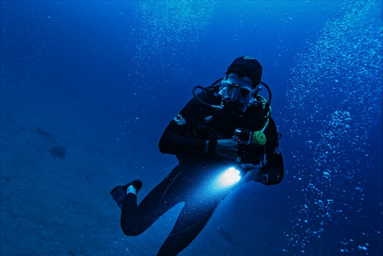
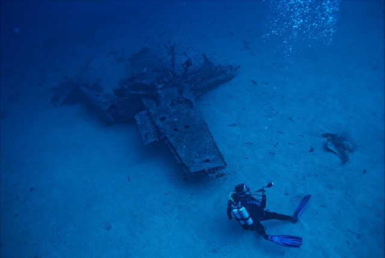

An open water dive refers to scuba diving in an expansive body of water away from the shore or any obstructions. When embarking on an open water diving excursion, a boat will typically transport the diver far out into an ocean or lake where they can jump in and begin their journey. During open water dives, the maximum depth that one should reach is 18 meters or around 59 feet. Anything further is a deep dive.

Wreck diving
Exploring the remains of a ship or aircraft wreck is strangely appealing and fascinating for many people. As such, wreck diving is a highly popular type of scuba diving. Numerous wrecks exist in nearly every large body of water. Such wrecks attract flocks of interested scuba divers and history buffs looking to get a glimpse of the past.

Ice diving
For those unbothered by the cold, ice diving can be an incredibly stunning and unique experience. Ice diving involves diving beneath a frozen surface in a lake or ocean. Often, divers will have to break the ice to get beneath the surface. As such, there is typically only one enter and exit point. Due to the cold temperatures and enclosed environment, it is important to be aware of risks such as hypothermia, equipment failure due to freezing, and the potential of getting lost beneath the ice.